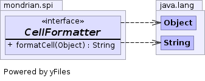

public interface CellFormatter
The user registers the CellFormatter's full class name as an attribute of a Measure in the schema file. A single instance of the CellFormatter is created for the Measure.
Since CellFormatters will
be used to format different Measures in different ways, you must implement
the equals and hashCode methods so that
the different CellFormatters are not treated as being the same in
a Collection.

| Modifier and Type | Method and Description |
|---|---|
String |
formatCell(Object value)
Formats a cell value.
|
String formatCell(Object value)
value - Cell value